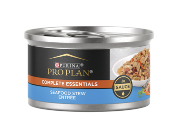
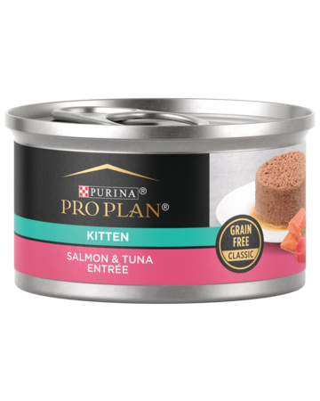
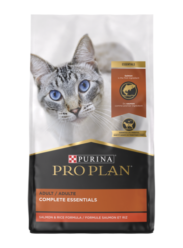
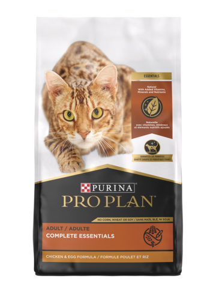

Pro Plan Complete Essentials Chicken, Tuna & Wild Rice Entrée In Sauce Wet Cat Food
Classic wet formula made with real chicken & tuna. Made with prebiotic fiber for digestive health and real seafood for a taste cats love

Pro Plan Complete Essentials Seafood Stew Entrée In Sauce Wet Cat Food
Classic wet formula made with real chicken for a taste cats love. Made with antioxidants, fatty acids, and optimal protein for maintaining ideal body condition

Pro Plan Development Salmon & Tuna Entrée Classic Grain Free Wet Cat Food
Targeted wet formula with DHA for brain and vision development as well as antioxidants to support a kitten’s developing immune system. Made with real salmon and tuna for a taste cats love

Purina Pro Plan Adult Complete Essentials Salmon & Rice Formula
Dry formula with added vitamins, minerals and nutrients made with salmon as the first ingredient. High in protein to help meet your cat’s nutritional needs and fortified with guaranteed live probiotics for digestive and immune health

Purina Pro Plan Adult Complete Essentials Chicken & Egg Formula
Natural dry formula with added vitamins, minerals and nutrients made with chicken as the first ingredient. High in protein to help meet your cat’s nutritional needs and fortified with guaranteed live probiotics for digestive and immune health.